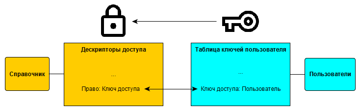

Контроль прав доступа
«1С:Кабинет сотрудника» обеспечивает управление доступом для следующих видов элементов проекта:
Система прав доступа основана на ключах доступа и дескрипторах доступа.

Дескрипторы доступа или просто, дескрипторы, хранятся в базе данных и в упрощенном варианте привязаны к элементам проекта и их правам (например, к справочнику). Дескрипторы содержат информацию о том, какие права этого элемента проекта доступны каким ключам.
Например, один дескриптор некоторого справочника может выглядеть следующим образом:
<Создание, Чтение: Администратор, Руководитель, Менеджер>Это значит, что создавать элементы и читать справочник могут те, кому доступны ключи Администратор, Руководитель и Менеджер.
Ключи доступа или просто, ключи, не хранятся в базе данных приложения. Это программные объекты и в базе данных хранится только хеш-сумма того или иного ключа. Ключи привязаны к пользователям и информация об этом хранится в системной таблице ключей пользователя.
Например, одна запись в этой таблице может выглядеть следующим образом:
<Иванов: Руководитель>Это значит, что пользователь Иванов обладает ключом Руководитель.
В результате, когда «1С:Кабинету сотрудника» понадобится узнать, какими правами обладает Иванов в отношении справочника, он возьмет ключи доступа Иванова и посмотрит в дескрипторы доступа справочника. Поскольку у Иванова есть ключ Руководитель, ему будут доступны права Создание и Чтение справочника.
Это был пример того, как ключи описывают один аспект предметной области — ролевой доступ. Чтобы это стало возможным, добавьте в проект класс ключей доступа (элемент проекта вида КлассКлючейДоступа) (подробнее). В данном случае такой класс ключей мог бы иметь имя Роли и именно от этого типа вы бы и создавали ключи Администратор, Руководитель и Менеджер.
Однако система прав доступа может быть сложнее и может включать в себя разные аспекты. Например, она может включать еще и конфиденциальность данных. В этом случае для каждого такого аспекта добавьте в проект свой класс ключей доступа.
Рассмотрим пример. В проекте существуют два класса ключей доступа:
- Роли, от которого будут создаваться ключи Администратор, Руководитель, Менеджер;
- Конфиденциальность, от которого будут создаваться ключи Открыто, Конфиденциально, Секретно.
В проекте есть два справочника: Поставщики и Сотрудники. Каждый из этих справочников имеет права: Создание, Чтение, Изменение, Удаление. Эти права определены на уровне «1С:Кабинета сотрудника».
Для справочника Поставщики хранятся следующие дескрипторы доступа:
<Чтение: Конфиденциально, Секретно>
<Создание, Изменение, Удаление: Секретно>Для справочника Сотрудники хранятся следующие дескрипторы доступа:
<Создание, Чтение: Администратор, Руководитель, Менеджер>
<Изменение, Удаление: Администратор, Руководитель>В системной таблице ключей пользователя существуют следующие записи:
<Иванов: Руководитель, Секретно>
<Петров: Менеджер, Конфиденциально>
<Сидоров: Менеджер, Открыто>В результате:
- Иванов может выполнять любые действия со справочниками Поставщики и Сотрудники;
- Петров может читать оба справочника и создавать элементы справочника Сотрудники;
- Сидоров может только создавать элементы и читать справочник Сотрудники.
Система прав «1С:Кабинета сотрудника» предоставляет следующую функциональность:
- Автоматическая выдача прав
- В простейшем случае «1С:Кабинет сотрудника» создает систему прав, которая не требует программирования. Права контролируются на уровне элементов проекта для нескольких предопределенных категорий пользователей
- Самостоятельное формирование дескрипторов и выдача ключей
- Для построения более сложной системы прав вы можете самостоятельно формировать дескрипторы доступа, ключи и выдавать ключи пользователям. В этом случае можно контролировать права как на уровне элементов проекта, так и на уровне отдельных элементов данных (RLS)
- Пересчет дескрипторов и ключей
- При самостоятельном формировании дескрипторов и ключей необходимо поддерживать их актуальность. Существует перечень ситуаций, в которых необходимо обеспечить их обновление
- Способы хранения дополнительной информации о пользователях
- Для выдачи ключей тем или иным пользователям может требоваться дополнительная информация об этих пользователях. Существуют разные способы хранения и получения такой информации